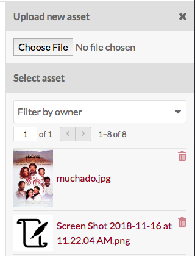
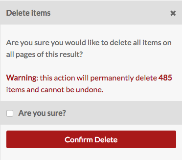

Les contenus sont les éléments constitutifs du système Omeka. Dans Omeka S, les contenus peuvent être mis à votre disposition par l'administrateur système et vous pouvez ajouter des contenus à votre propre site. Les contenus sont répertoriés dans l'onglet Contenus (icône cube) de la navigation, à gauche du tableau de bord administratif.

Chaque contenu apparaît sous forme de ligne, avec des colonnes pour:
- le titre*
- icônes pour * modifier * (crayon), * supprimer * (corbeille) ou * afficher les détails * (3 petits points)
- la classe*
- le * propriétaire * du contenu
- et la date à laquelle le contenu a été * créé *.
<<<<<<< HEAD
 =======
Les options de navigation et de création des contenus s'affichent au-dessus du tableau des contenus.
=======
Les options de navigation et de création des contenus s'affichent au-dessus du tableau des contenus.
[FR] Traduction française - fr-v0.1
En haut à droite de la fenêtre Contenus se trouve le bouton * Ajouter un nouvel contenu *.
Sur le côté gauche se trouve un affichage du nombre de pages de contenus, avec les flèches avant et arrière. Le numéro de page actuel est un champ éditable. Entrez un numéro de page valide et appuyez sur la touche Entrée pour accéder à cette page.
En haut au centre se trouve un bouton Recherche avancée.
Juste au-dessus du tableau de droite, vous trouverez des options pour trier le tableau des contenus, avec deux menus déroulants. Le premier vous permet de choisir entre titre, identifiant, classe, propriétaire, et (date) créé; la seconde vous permet de trier par ordre croissant ou décroissant. Pour executer ses actions, cliquez sur le bouton Trier.
<<<<<<< HEAD On the left side is a display for the number of pages of items, with forward and back arrows. The current page number is an editable field — enter any valid page number and hit return/enter on your keyboard to go to that page.
In the center top is a button for Advanced Search.
Just above the table on the right are options for sorting the table of items, with two dropdown menus. The first lets you select between Title, Identifier, Class, Owner, and (Date) Created; the second allows you to sort ascending or descending. To apply, click the sort button.
Between these and the table, on the left, is a dropdown for batch actions, including edit selected, edit all, delete selected, and delete all.
View
To quickly view the basic information about an item, click the view details (ellipses) button in the row for the item, located next to the edit and delete buttons. This will open a drawer to the right of the list which displays the item’s title, description, visibility, any sites it is used in, and its associated media..
For a more detailed look at an individual item, click on its title in the items browse table or when viewing its details.
The blue squares indicate where to click to open the full item view.
When you view an individual item , there are tabs for the item’s Metadata and its Linked Resources. The right side of the page displays the item’s media, any item sets to which it belongs, its creation date, owner, and visibility.
An item’s linked resources (shown below) are resources, which are linked to this item through properties. Note that this section only shows resources which have been linked to this item (which have it for a property); resources which are linked from this item will display in the property which they fill.
Entre ceux-ci et le tableau, à gauche, se trouve un menu déroulant pour les actions par lot, y compris les opérations de modification des contenus sélectionnés, de tous les contenus, de suppression des contenus sélectionnés et de suppression de tous les contenus.
Vue
Pour afficher rapidement les informations de base sur un contenu, cliquez sur le bouton Afficher les détails (3 petits points) dans la rangée du contenu, situé à côté des boutons Modifier et Supprimer. Cela ouvrira un onglet à la droite de la liste qui affiche le titre, la description et la visibilité du contenu.
Pour plus de détail sur un contenu, cliquez sur son titre.
Lorsque vous affichez un contenu, il existe des onglets pour les métadonnées et les ressources liées du contenu. Le côté droit de la page affiche le média, les collections auxquelles il appartient, sa date de création, son propriétaire et sa visibilité.
 Les carrés bleus indiquent où cliquer pour obtenir la vue complète du contenu.
Les carrés bleus indiquent où cliquer pour obtenir la vue complète du contenu.
Les ressources liées d'un contenu (illustrées ci-dessous) sont des ressources qui ont été ajoutées au contenu en tant que liens dans une propriété de la notice (champs de saisie). Notez que cette section affiche uniquement les ressources qui ont été liées à ce contenu; les ressources liées depuis ce contenu s'afficheront dans le contenu lié.
[FR] Traduction française - fr-v0.1
Les ressources liées sont regroupées par la propriété pour laquelle elles sont rattachées au contenu actuel. Dans l'exemple ci-dessous, le contenu Daniel Chester French est utilisé pour les propriétés "Editeur", et "Créateur" pour les ressources liées.
Vous pouvez filtrer les ressources liées pour afficher uniquement celles référençant une propriété spécifique à l'aide du menu déroulant "Filtrer par propriété". Cela n'affichera que les propriétés activement utilisées.
<<<<<<< HEAD
=======

[FR] Traduction française - fr-v0.1
Ajouter un contenu
Pour ajouter un nouveau contenu, commencez par sélectionner le bouton Ajouter un nouveau contenu.
<<<<<<< HEAD Before creating items, site admins may want to create Resource Templates, which will load specific fields for various item types. ======= Avant de créer des contenus, les administrateurs peuvent vouloir créer des Modèles de ressources, qui chargeront des champs spécifiques pour différents types de contenus.
[FR] Traduction française - fr-v0.1
Valeurs
L'onglet Valeurs est l'endroit où vous entrez les métadonnées, telles que le titre, la description, etc.
<<<<<<< HEAD
=======

[FR] Traduction française - fr-v0.1
Vous pouvez sélectionner un modèle de ressource dans le menu déroulant. Les modèles de ressources sont définis par les administrateurs de site et les éditeurs.
<<<<<<< HEAD - If using a resource template, the class should automatically load. - If not using a resource template, you may select a class from the dropdown menu (these are populated from the Vocabularies in your installation). ======= - Si vous utilisez un modèle de ressource, la classe devrait se charger automatiquement. - Si vous n'utilisez pas de modèle de ressource, vous pouvez sélectionner une classe dans le menu déroulant (celles-ci sont renseignées dans les [Vocabulaires] Vocabulaires de votre instance).
[FR] Traduction française - fr-v0.1
Ajouter des informations aux champs qui se chargent. Si vous ne sélectionnez pas de modèle de ressource ni de classe, les champs Titre et Description de Dublin Core seront automatiquement chargés.
Vous pouvez ajouter du texte, le lien vers un contennu ou un lien externe dans chaque champ.
Que vous utilisiez ou non un modèle de ressource, vous pouvez ajouter d'autres champs ("propriétés") à l'aide du tiroir situé à droite de l'écran. Vous pouvez simplement cliquer sur l'un des vocabulaires pour l'ouvrir et cliquer sur les propriétés que vous souhaitez ajouter, ou vous pouvez utiliser la fonction «Filtrer les propriétés» pour rechercher une propriété spécifique (utile lorsque vous avez plusieurs vocabulaires volumineux).
<<<<<<< HEAD
 =======
=======

[FR] Traduction française - fr-v0.1
En cliquant sur l'étiquette de propriété, elle sera automatiquement ajoutée au contenu. Si vous ajoutez une propriété par accident, laissez-la vide et elle sera supprimée du contenu lorsque vous enregisterez les modifications.
Vous pouvez définir des propriétés individuelles comme privées ou publiquement visibles à l'aide de l'icône en forme d'œil pour chaque propriété. Notez que les propriétés définies comme privées sont toujours visibles par les administrateurs globaux, les administrateurs de site et les éditeurs pourront voir les propriétés même lorsqu'elles sont définies comme privées. Les auteurs pourront voir toutes les propriétés des objets qu’ils possèdent, mais ne verront pas les propriétés privées créées par d’autres utilisateurs.
Dans l'image ci-dessous, la première propriété (Titre) est publique, comme l'indique l'icône en forme d'œil ouvert. La deuxième propriété (Description) est privée, comme l'indique l'icône en forme de barre oblique. En cliquant ou en appuyant sur entrer sur l'icône de l'œil, vous basculez entre public et privé.
<<<<<<< HEAD
 =======
=======

[FR] Traduction française - fr-v0.1
Texte
Les champs "texte" permettent une saisie de texte non formatée.
<<<<<<< HEAD
 =======
=======

[FR] Traduction française - fr-v0.1
Vous pouvez indiquer la langue du contenu d'une entrée à l'aide du symbole du globe situé au-dessus de l'entrée (voir dans l'image ci-dessous). Cliquez sur le globe pour activer un champ de texte, puis entrez la [balise de langue IETF].(https://en.wikipedia.org/wiki/IETF_language_tag) code pour la langue dans laquelle le texte est écrit.
<<<<<<< HEAD
 =======
=======

[FR] Traduction française - fr-v0.1
Ressource Omeka
Les champs de ressources Omeka créent un lien interne entre la ressource que vous créez et la ressource saisie dans ce champ.
Lors de la création d'un contenu, vous avez la possibilité d'utiliser un autre contenu ou une collection.
Le choix d'un type de ressource ouvrira un tiroir latéral dans lequel vous pourrez parcourir tutes les ressources de l'instance. Vous pouvez utiliser la fonction de recherche en haut du tiroir pour réduire la liste ou pour rechercher rapidement un contenu spécifique.
Une fois que vous avez sélectionné un contenu ou une collection, des informations détaillées seront chargées et vous devez cliquer sur Choisir une ressource pour terminer la liaison. Vous pouvez également cliquer sur le bouton X dans le coin supérieur droit pour revenir à la liste des contenus ou des collections.
<<<<<<< HEAD
 =======
=======

[FR] Traduction française - fr-v0.1
Si vous utilisez un contenu pour la propriété, vous aurez d'autres options pour rechercher le contenu souhaité dans le tiroir. Ouvrez ces options en cliquant sur le triangle situé à côté de la phrase "Recherche par filtre".
<<<<<<< HEAD
 =======
=======

[FR] Traduction française - fr-v0.1
This will open a menu below the button with the following options to filter the items in the drawer:
- Filter by class: a dropdown where you can select any class provided by the vocabularies on the installation;
- Filter by item set: a dropdown where you can limit the items displayed in the drawer to only those associated with a particular item set
- Filter by item ID: a search field where you can input the ID of the item you want to use. You can find an item's ID in the url of it's edit page; if you are editing the item and the url is
admin/item/11547/editthen the item's ID is 11547.

Item resources also have an option for "Quick add". When this switch is flipped, all of the items in the drawer have a checkbox. You can use these checkboxes to add multiple items as a property at once. Note that you can only edit one property at a time, so all of the items must populate the same property (ex, Creator, Has Part).

URI
URI fields link to an external website or online resource.
You may add other fields by selecting a property from the list on the right. Browse fields by vocabulary (Dublin Core, Bibliographic Ontology, etc), or search in the filter properties bar above the list of properties and vocabularies.
Language
You can indicate the language for the content of an input using the globe symbol above the input (see the red arrow in the image below). Click on the globe to activate a text field, then enter the IETF Language tag for the language in which the text is written.
Value order
If you have multiple values for a property, you can reorder them by dragging and dropping. Click on the bar on the left of the value to grab that value, and drag it into the order that you want it.
Media
Use the Media tab to add images, video, or other files. Using the buttons on the Add New Media menu on the right side of the screen, select a media type (Upload, URL, oEmbed, YouTube, or HTML)

- Upload: select a file to upload from your computer.
- URL: import media via a uri.
- HTML: add html content as a media resource for your item.
- IIIF: Add an IIIF image via url.
- oEmbed: insert an embedded representation of an external URL. Note that this will only work with content from existing oEmbed implementations - use the url in your browser’s location bar.
- YouTube: add a link to embed a YouTube video. Use the url from your browser’s location bar (with
/watch/in it) rather than theyoutu.belink.
You can edit media later by going by editing an item, navigating to the media tab, and clicking the edit button (pencil) for a media when editing the item.
You can delete any media instance from the item's edit page using the delete button (trashcan) on the upper right corner of the media block.

If you have more than one media instance for an item, you can reorder them by dragging and drop each media instance block, using the icon of three lines in the upper left corner of the block as the anchor when dragging.
Omeka S uses the topmost media for an item to create thumbnail images for that item on browse and show pages.
Item Sets
You can only add items to existing item sets.
From the right-hand menu, click on the owner of an item set, then click the name of the item set to add the item to that set.
You can also filter item sets using the text entry bar above the list of users.
To remove a connection between an item and item set, click the delete (trash can) button to the right of the item set title.
Sites
Select sites to which to add your items.
To add an item to a site, select a site from the menu in the right-hand drawer. You can filter sites by searching in the field at the top of the drawer.
If there are sites which have "auto-assign new items" turned on in their settings, you can use this tab to remove this item from those sites. Click the trash can icon on the right side of the site's row to remove it.
Advanced
The advanced tab has two options. One lets you set a custom thumbnail for the item. The other allows you to change which user has ownership of the item.
Thumbnail
By default, Omeka S will use the topmost media to generate a thumbnail for the item. If you want to use a non-media image for the thumbnail for an item you can set it here.
When you use an asset thumbnail instead of uploading media, the asset thumbnail does not display on the item's public show page. This makes such thumbnails useful for items which have no media but which would benefit from a thumbnail for the browse view, or for items whose media does not render an elegant thumbnail, such as audio or visual files.
The assets you select from and upload as thumbnails in this tab are the same as those created for site logos.
To assign an asset as a thumbnail, click on the Select button in the main work area of the tab. This will open a drawer on the right side.

The drawer offers two options: upload a file using your browser, or select from existing assets. To select an existing asset, simply click on it and it will automatically be assigned to the item.
To remove an asset which you have assigned as a thumbnail, click the "Clear" button below the image of the asset. To replace it, click select and either choose or upload a new thumbnail asset.
Owner
The ownership of an item is usually assigned to the user account which creates the item. You can use this dropdown to reassign ownership. The dropdown will load the user names (not email addresses) of users in the installation. Select a new user and save changes.
Visibility
Use the make public/private button (eye icon) to set whether the item is visible to the public or only to users of the Omeka S system.
 Public
Public
 Private
Private
Note that if an item is private, all the media attached is private, but an item which is public can have attached media which are set to be either public or private.
Edit an item
Once you have created an item, you can edit it at any time, either by clicking the edit icon (pencil button) or clicking on the item's title and then clicking the Edit button in the upper right-hand corner of the screen.
To cancel out of editing, click the Cancel button in the upper right corner, between the Delete and Save buttons.
Editing options are the same as when creating a new item, with the addition of the ability to add any media which has been saved to an item as a property:
Media as property
Once you have created an item and added media to it, you will also have the option to use media attached to that item for a property.
To use a media resource for a property, select the media option for the element (1). The drawer which opens will display all media attached to the item. Select the media which you want to use(2); this will switch the drawer to just that media (second image). Click the Select Resource button at the bottom of the drawer to complete the process (3).


Batch actions
From the browse page of items (admin/item) you can batch edit items, using the dropdown menu on the left near the pagination buttons. You can select multiple items using the checkboxes on the left of each item's row.

Batch actions are as follows:
- Edit selected: edit only the items that are selected on the page
- Edit all: edit all the items returned by a search (default is all items)
- Delete selected: delete only the items that are selected on the page
- Delete all: delete all the items returned by a search (default is all items)
Choose one of these options and then click Go.
Batch editing items takes you to a new page. The items being edited will display on the right side in a drawer, while the batch edit form gives you the following options:
- set visibility: a dropdown, select from public or not public.
- set template: a dropdown, select from the installation's resource templates.
- set class: a dropdown, select from classes of the installed vocabularies.
- add to item set: a dropdown, select from item sets on the installation. Add to an additional item set using the add another item set button.
- remove from item set: a dropdown, select from item sets on the installation. Remove from an additional item set using the remove another item set button.
- clear property values: a dropdown menu with all the properties in all vocabularies, selecting from this will remove any values in that property in the affected items. Clear additional properties using the Clear another property button.
- Set value visibility: set the visibility of a specific property to either public or not public. Unlike the radio buttons at the top of the form, this will only affect a single property instead of the entire item. Select a property from the text field (type to begin searching), and the choose either the public or not public radio button for this option.
In addition, you can use the buttons at the bottom of the batch edit form to add properties to every item:
- add text value
- add resource value
- add URI value
Selecting any of these will add a block to the form where you can select a property from the installed vocabularies and enter the value for that property.

For the delete actions, a drawer will open on the right side of the screen telling you the number of items which will be deleted. Nothing will be deleted unless you click the red Confirm Delete button. This action cannot be undone. To opt out of deleting the items, click the X in the upper right corner of the deletion drawer. To confirm delete, check the "Are you sure" checkbox and then click Confirm Delete
